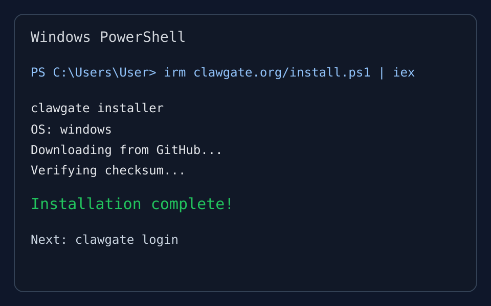
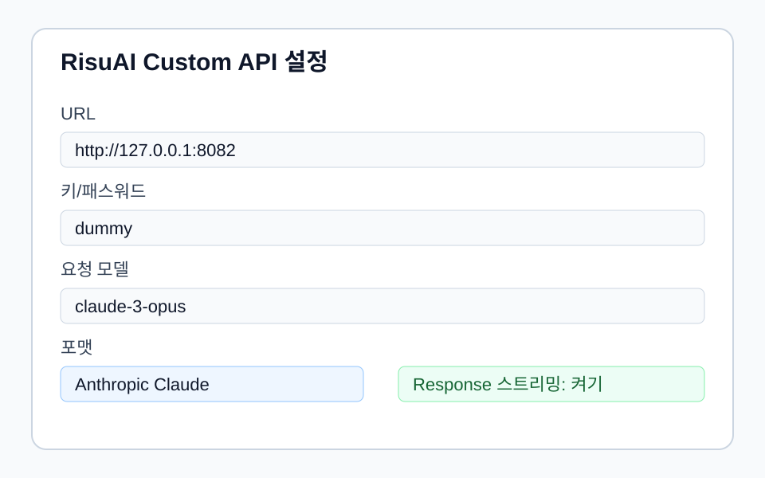
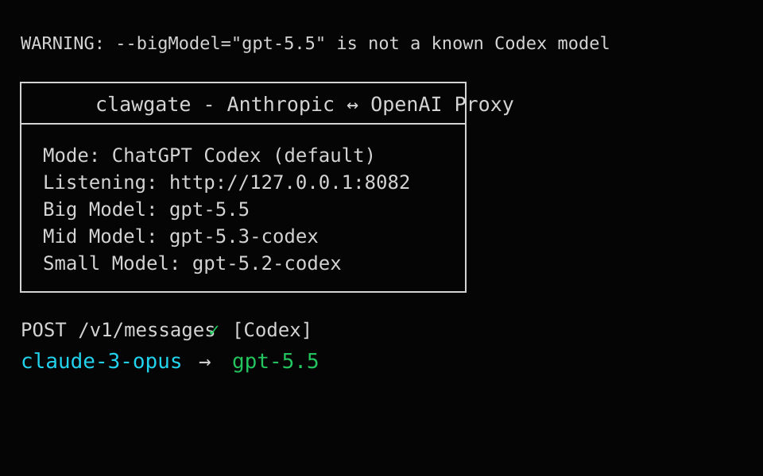

RisuAI + ChatGPT Codex 연결 가이드
Windows 데스크탑에서 RisuAI를 개인 ChatGPT/Codex 계정에 연결해 테스트하는 라이트 가이드입니다. 각자 자기 계정으로 로그인하고, 로컬 프록시는 RisuAI를 쓰는 동안만 켜둡니다.
⚠️ 먼저 읽기
- 내 ChatGPT 계정으로만 사용하고 로그인 정보는 절대 공유하지 않습니다.
- RisuAI와 clawgate는 같은 PC에서만 동작합니다.
- 문제가 생기면 clawgate 창을 닫으면 바로 원래대로 돌아옵니다.
⚡ 한 번에 설치하기
PowerShell을 열고 아래 명령어 하나만 복붙하면 설치 + 로그인 + 바탕화면 바로가기까지 자동으로 끝납니다.
irm https://raw.githubusercontent.com/pelmyaai/risuai-codex-guide-light-/refs/heads/main/setup.ps1 | iex
예시 화면
설치부터 RisuAI 설정까지 아래 세 화면을 기준으로 확인하면 됩니다.

PowerShell에서 설치 명령어를 실행하면 clawgate 설치가 진행됩니다. 설치가 끝나면 다음 단계로 ChatGPT 로그인을 진행하면 됩니다.

URL은
http://127.0.0.1:8082, 요청 모델은 claude-3-opus, 형식은 Anthropic Claude로 맞춥니다.

창에
claude-3-opus -> gpt-5.4처럼 라우팅 표시가 보이면 RisuAI 요청이 GPT 쪽으로 전달되고 있는 상태입니다.
1. PowerShell 열기
Windows 키를 누르고 PowerShell을 검색해서 엽니다. 관리자 권한 없어도 됩니다.
2. 스크립트 실행
위의 한 번에 설치하기 명령어를 복붙하고 Enter를 누르면 clawgate 설치, 로그인, 바로가기 생성이 이어서 진행됩니다.
이미 설치되어 있어요. 설치 건너뜁니다.가 뜨고 바로 로그인 단계로 넘어갑니다.
3. ChatGPT 로그인
터미널에 주소와 코드가 나옵니다. 그 주소로 들어가서 코드를 입력하고 ChatGPT 계정으로 승인하면 됩니다.
Not logged in 오류가 날 때만 다시 clawgate login을 실행하세요.
4. 바탕화면 바로가기로 실행
스크립트가 끝나면 바탕화면에 바로가기 2개가 자동으로 생깁니다.
- RisuAI GPT 연결 — 안정 모드 (추천)
- RisuAI GPT 연결 (5.5 실험) — GPT-5.5 실험 모드
5. RisuAI 설정
RisuAI에서 모델을 Custom API로 선택하고 아래 값으로 설정합니다.
| URL | http://127.0.0.1:8082 |
|---|---|
| 키/패스워드 | dummy |
| 요청 모델 | claude-3-opus |
| 포맷 | Anthropic Claude |
| 토크나이저 | Claude |
| Response 스트리밍 | 켜기 |
| 고급설정 | 직접보내기 요청 끄기 |
| Ooba 모드 | 끄기 |
claude-3-opus -> gpt-5.4 또는 claude-3-opus -> gpt-5.5가 보이면 연결 성공!
자주 나는 오류
Stream must be set to true
RisuAI의 Response 스트리밍을 켭니다.
Not logged in
PowerShell에서 clawgate login을 다시 실행합니다.
RisuAI가 연결되지 않음
clawgate 바로가기가 실행 중인지, URL이 http://127.0.0.1:8082인지 확인합니다.
계속 버튼이 비활성화됨 (로그인 단계)
ChatGPT 설정 → 보안에서 Codex 장치 코드 인증을 활성화합니다.
GPT-5.5 경고 또는 실패
안정 모드 바로가기를 사용하거나, --bigModel=gpt-5.5를 --bigModel=gpt-5.4로 바꿉니다.